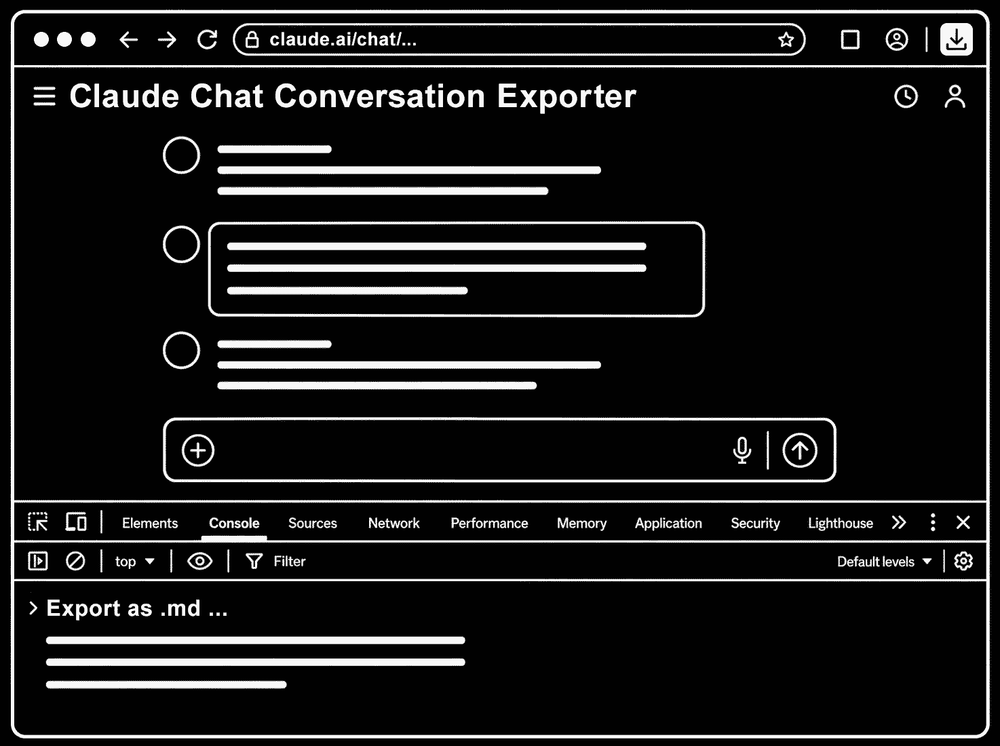
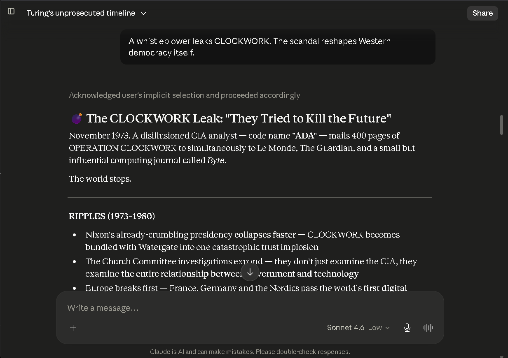
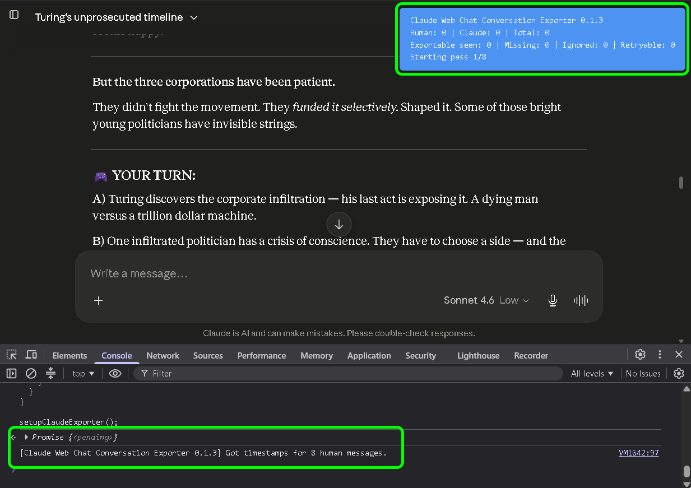

Browser extensions are hard to trust
Many exporters require extension permissions, cloud integrations, remote conversion servers, or opaque background scripts. This project keeps the first version simple and auditable.
Local-first · Auditable · Privacy-preserving
Claude Web Chat Conversation Exporter is a small browser-console script for saving the current Claude.ai web conversation as a local Markdown file.
Working as of 2026-07. Claude.ai is a changing web app, so watch the repo and report breakage if the UI changes.

Many exporters require extension permissions, cloud integrations, remote conversion servers, or opaque background scripts. This project keeps the first version simple and auditable.
Claude conversations often contain plans, code reasoning, research notes, debugging trails, drafts, and reusable project context.
Open the conversation, run the script, download a Markdown file. No backend. No analytics. No third-party upload.






The demo is split into two continuation clips.


Save useful Claude conversations into Obsidian, Logseq, GitHub repos, project folders, or local archives.
Preserve debugging sessions, architecture decisions, code explanations, and implementation notes.
Move conversation context between Claude, ChatGPT, Perplexity, local models, and other tools.
Turn long AI discussions into versioned Markdown files you can search, cite, review, and reuse.